Kayla Guide: Complete Warrior of Chaos — Hero Wars Alliance 2026
- By: Alexandre Domingos. .
Meet Kayla — the unstoppable warrior who turns her own wounds into weapons. A front-line powerhouse of the Way of Chaos, she doesn't just survive punishment: she thrives on it. Every hit she takes fuels her legendary Inner Flame, turning sustained battle damage into pure area devastation that enemies simply cannot outrun.
Kayla is built to outlast and outburn every opponent. Her supreme skill steals health from enemies, resurrects her brother Aidan, and the longer a fight runs — the more her Frenzy stacks tear teams apart. If you want a hero who wins by refusing to die, Kayla is your answer.


📋 Kayla Guide — Table of Contents
- Who Is Kayla?
- Overall Rating in the Meta
- Pros & Cons
- Talisman Max Stats Comparison
- Legendary Relic Skills
- Talisman Guide
- Best Skins
- Artifacts
- Glyphs
- Best Teams 2026
- Most Used Teams 2026
- Conclusion
Who Is Kayla in Hero Wars Alliance?
Kayla is the Way of Chaos faction's most feared front-line warrior. She combines relentless pure area damage with self-healing sustain and an unbreakable bond with her brother Aidan. Her legendary relic abilities transform her from a strong warrior into a battlefield-controlling force that grows more dangerous the longer a fight lasts.

- Main Class: Warrior
- Position: Front Line
- Main Stat: Agility
- Faction: Way of Chaos
- Synergy: Aidan, Peech
- Hydra Tier List: B Tier
- Hero Tier List: A Tier
- How to get Soul Stones: Events, Heroic Chest
Kayla's true power comes from her legendary relic kit: Inner Flame deals continuous pure AoE damage scaled with her Health, Phoenix's Fury steals life and resurrects Aidan, and Frenzy turns every bit of damage she takes into a stacking damage multiplier. Build her correctly and she becomes nearly unkillable.
Kayla — Talisman Max Stats Comparison
| Stat |
Talisman of Memory
|
|
|---|---|---|
| Intelligence |  3,833 3,833 |
3,833 |
| Agility |  17,134 17,134 |
15,134 |
| Strength |  4,892 4,892 |
4,892 |
| Health |  874,010 874,010 |
874,010 |
| Physical Attack |  154,291 154,291 |
135,091 |
| Magic Attack |  26,605 26,605 |
26,605 |
| Armor |  53,150.9 53,150.9 |
51,150.9 |
| Magic Defense |  25,351.8 25,351.8 |
25,351.8 |
| Toughness |  2,790 2,790 |
2,790 |
| Armor Penetration |  22,803 22,803 |
34,803 |
| Crit Hit Chance |  1,482.4 1,482.4 |
9,072.4 |
| Crushing |  8,424 8,424 |
8,424 |
Kayla Pros and Cons — Hero Wars Alliance
✔ Pros
- Relentless pure AoE damage via Inner Flame — ignores resistances.
- Self-healing sustain — Phoenix's Fury steals health with every hit.
- Resurrects Aidan on supreme use — powerful comeback mechanic.
- Frenzy stacks make her exponentially stronger the longer the fight.
- Chaotic Fracture reduces enemy armor for the entire team.
✘ Cons
- Needs extended fights — short burst battles limit her impact.
- Vulnerable to heavy CC — disables healing and damage mechanics.
- Aidan-dependent — loses key synergy without her brother.
- Slow ramp-up — early battle phases are less dominant.
Kayla's Legendary Relic Skills Upgrade Priority - Hero Wars Alliance
Master Kayla's relic abilities to unleash devastating damage across the battlefield. These legendary skills define her role as the most feared warrior in Hero Wars Alliance, transforming her into a pure area damage powerhouse with synergy and survivability that few can match.
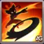
1st - Phoenix's Fury (Supreme)
In-game description: Kayla throws a chakram that strikes enemies around her with physical damage. Enemies hit lose maximum health equal to 20% of the damage dealt, and Kayla restores the same amount of Health. If Aidan is dead on your team, he gets resurrected with the same health value Kayla recovers.
Skill Explanation: Kayla's supreme skill and top upgrade priority. The chakram deals Physical Damage (100% Phys.Atk. + 6,000), then steals 20% of the damage dealt as Health from every enemy hit — creating a devastating self-sustain loop. If Aidan is dead, he is resurrected with the exact HP Kayla recovers, enabling powerful comeback mechanics unique to the Way of Chaos faction.
Formula with Talisman of Memory
- Formula 1: Physical Damage: 160,291 (100% × 154,291 + 6,000)
- Formula 2: Health Steal per hit: 32,058 (20% × 160,291)
Formula with Talisman of Retribution
- Formula 1: Physical Damage: 141,091 (100% × 135,091 + 6,000)
- Formula 2: Health Steal per hit: 28,218 (20% × 141,091)
Skill Animation Info
- Animation delay: 0.25 seconds
- Keywords: Supreme, Health Steal, Aidan Synergy
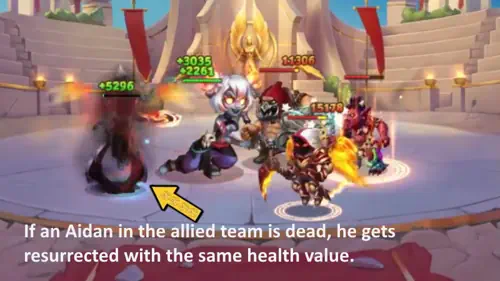
Evolution Priority: VERY HIGH (dark green) – This is your foundation skill. The health steal makes Kayla unkillable, and Aidan resurrection is a game-changer. Always upgrade this first.
2nd - Acrobatics
In-game description: When Kayla's health is above 40%, she performs an agile jump to the enemy team's center for maximum damage. When health drops below 25%, she regenerates Health over 5.0 seconds. She gains additional healing for each allied Chaos Hero. She then returns to her team when possible.
Skill Explanation: Kayla's dual-phase survival skill. Above 40% HP she leaps to the enemy center for optimal positioning. Below 25% HP she triggers a Heal (25% Health + 2,400) over 5.0 seconds, with an extra (5% Health + 1,200) per allied Chaos Hero (e.g., Aidan, Peech). Since both talismans provide the same Health (874,010), healing values are identical with either.
Formula with Talisman of Memory
- Formula 1: Heal (over 5.0s): 220,903 (25% × 874,010 + 2,400)
- Formula 2: Bonus Heal per Chaos ally: 44,901 (5% × 874,010 + 1,200)
Formula with Talisman of Retribution
- Formula 1: Heal (over 5.0s): 220,903 (25% × 874,010 + 2,400)
- Formula 2: Bonus Heal per Chaos ally: 44,901 (5% × 874,010 + 1,200)
Skill Animation Info
- Initial Cooldown: 8 seconds
- Cooldown: 15 seconds
- Duration (heal): 5.0 seconds
- Keywords: Chaos Synergy, Survival
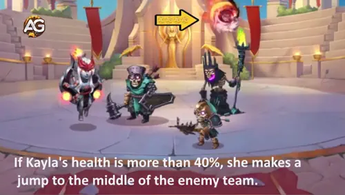
Evolution Priority: HIGH (green) – Your second upgrade priority. The survival healing keeps you in fights longer, and Chaos Hero synergy is essential for pure damage compositions.
2nd - Acrobatics Legendary (Relic Level 10)
In-game description: Kayla now deals physical damage to nearby enemies before leaping back to her allies. The escape becomes an attack, turning defensive plays into offensive strikes.
Skill Explanation: At Relic Level 10, the retreat becomes a counter-attack. Kayla deals Physical Damage (depends on Physical Attack) to nearby enemies before jumping back to her team — turning a survival mechanic into an offensive tool. Higher Physical Attack (Talisman of Memory) means more damage on retreat.
Formula with Talisman of Memory
- Formula 1: Physical Damage (retreat): depends on Phys.Atk. (154,291)
Formula with Talisman of Retribution
- Formula 1: Physical Damage (retreat): depends on Phys.Atk. (135,091)
Skill Animation Info
- Keywords: Repositioning, Physical Damage
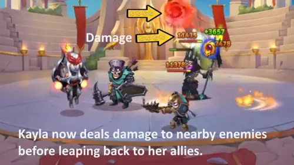
Evolution Priority: HIGH (green) – Prioritize this after Phoenix's Fury. The legendary version transforms Acrobatics from pure survival into a damage tool, making it essential for your PvP and Frontier battles.
Relic Unlocks at Level 10 Info
| Info | Value |
|---|---|
| Relic Shard Necessary (Level 2–10) |

280
|
| Total Relic Shard Necessary (Level 0–10) |
330
|
| Total Physical Attack Bonus (Level 0–10) |
+7332
|
| Total Health Bonus (Level 0–10) |
+56149
|
3rd - Retaliatory Strike
In-game description: Causes physical damage to surrounding enemies based on the damage Kayla has taken since she last used this skill, with a maximum of 150% Phys.Atk. + 6,000. Also blinds enemies for 3.0 seconds, reducing their accuracy.
Skill Explanation: A counter-damage skill that punishes aggressive enemies. Retaliatory Strike deals Physical Damage (max: 150% Phys.Atk. + 6,000) scaled by damage received since the last cast. It also blinds all nearby enemies for 3.0 seconds, reducing their accuracy. Talisman of Memory maximizes the damage cap; Talisman of Retribution reduces it but grants more Armor Penetration and Crit Hit Chance.
Formula with Talisman of Memory
- Formula 1: Max Physical Damage: 237,437 (150% × 154,291 + 6,000)
Formula with Talisman of Retribution
- Formula 1: Max Physical Damage: 208,637 (150% × 135,091 + 6,000)
Skill Animation Info
- Initial Cooldown: 12 seconds
- Cooldown: 8 seconds
- Duration (blind): 3.0 seconds
- Animation delay: 0.6 seconds
- Keywords: AoE, Blind, Counterattack
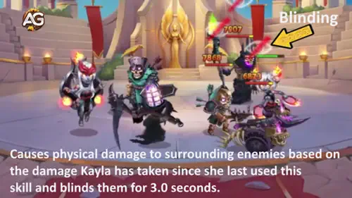
Evolution Priority: MEDIUM-HIGH (orange) – Upgrade after your core survivability skills. The blinding effect is valuable, but the damage scaling relies on incoming damage, making it less consistent than other skills.
4th - Inner Flame (Legendary Relic Level 20)
In-game description: After using her second skill (Acrobatics), Kayla begins to burn, dealing pure damage every 0.5 seconds to herself and enemies around her. The effect continues until her health drops below 25%. Damage scales with Health pool.
Skill Explanation: The core of Kayla's pure area damage identity. After casting Acrobatics, she ignites and deals Pure Damage (depends on Health) every 0.5 seconds to herself and all nearby enemies. The burn lasts until HP drops below 25%. Since both talismans provide the same Health (874,010), Inner Flame per-tick damage is identical with either. Maximize this by stacking more Health (e.g., with Aidan or Byrna).
Formula with Talisman of Memory
- Formula 1: Pure Damage per tick (0.5s): 14,478 (depends on Health: 874,010)
Formula with Talisman of Retribution
- Formula 1: Pure Damage per tick (0.5s): 14,478 (depends on Health: 874,010)
Skill Animation Info
- Tick Interval: 0.5 seconds
- Keywords: AoE, Health Scaling, Continuous
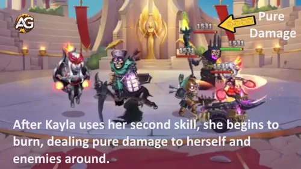
Evolution Priority: VERY HIGH (dark green) – This is your damage core. The pure damage output is unmatched, and it scales with Health, synergizing with Phoenix's Fury's healing. Pair with heroes like Aidan or Byrna who increase ally health.
4th - Inner Flame Legendary (Relic Level 20 - Enhanced)
In-game description: While Kayla is burning (Inner Flame active), damage from the skill increases by 6% every 2.0 seconds, stacking indefinitely. The longer the battle, the more devastating her damage becomes.
Skill Explanation: The legendary enhancement turns Inner Flame into an exponential damage engine. Each 2.0-second interval, the per-tick damage grows by +6% — with no cap. In a 30-second burn: 15 stacks × 6% = +90% bonus damage. Since this is a percentage buff with no absolute values, the formula is identical with both talismans.
Formula with Talisman of Memory
- Formula 1: Damage increase per 2s: +6% (stacks indefinitely)
Formula with Talisman of Retribution
- Formula 1: Damage increase per 2s: +6% (stacks indefinitely)
Skill Animation Info
- Stack Interval: 2.0 seconds
- Keywords: Stacking Damage, Pure Damage
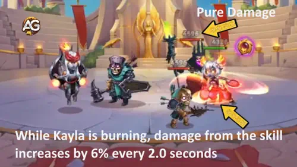
Evolution Priority: VERY HIGH (dark green) – Upgrade this immediately after the base Inner Flame. The scaling damage makes this your most powerful skill in extended battles, especially in Frontier content.
Pro Tip: Combine Inner Flame Legendary with heroes like Aidan or Byrna who increase your maximum health, allowing Inner Flame to burn longer and deal more total damage.
Relic Unlocks at Level 20 Info
| Info | Value |
|---|---|
| Relic Shard Necessary (Level 11–20) |
800
|
| Total Relic Shard Necessary (Level 0–20) |
1130
|
| Total Physical Attack Bonus (Level 0–20) |
+19552
|
| Total Health Bonus (Level 0–20) |
+149734
|
5th - Chaotic Fracture (Legendary Relic Level 1)
In-game description: Reduces the Armor of all nearby enemies for 6.0 seconds. When Kayla's health drops below 50%, the armor reduction is doubled. Lower enemy armor means the entire team deals more physical damage.
Skill Explanation: A team-wide debuff that shreds enemy Armor for 6.0 seconds. Base reduction scales with Physical Attack. When Kayla's HP drops below 50%, the effect doubles — a powerful surge when she is under pressure. Talisman of Memory yields higher reduction due to its greater Physical Attack.
Formula with Talisman of Memory
- Formula 1: Armor Reduction (normal): 26,491 (depends on Phys.Atk. 154,291)
- Formula 2: Armor Reduction (below 50% HP): 52,983 (doubled)
Formula with Talisman of Retribution
- Formula 1: Armor Reduction (normal): 23,197 (depends on Phys.Atk. 135,091)
- Formula 2: Armor Reduction (below 50% HP): 46,394 (doubled)
Skill Animation Info
- Duration: 6.0 seconds
- Keywords: AoE, Team Utility
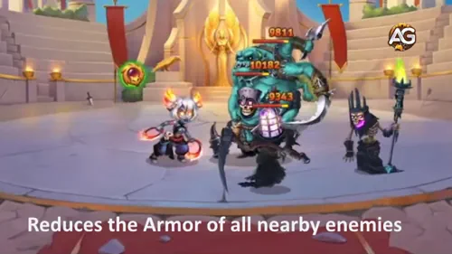
Evolution Priority: MEDIUM (yellow) – Useful for team compositions heavy on physical damage, but doesn't directly increase Kayla's damage. Upgrade after your core skills are maxed.
Relic Unlocks at Level 1 Info
| Info | Value |
|---|---|
| Relic Shard Necessary (Level 0–1) |
50
|
| Total Relic Shard Necessary (Level 0–1) |
50
|
| Total Physical Attack Bonus (Level 0–1) |
+3760
|
| Total Health Bonus (Level 0–1) |
+28794
|
6th - Frenzy (Legendary Relic Level 30)
In-game description: Kayla's damage increases by 15% each time she cumulatively loses 50% of her initial Health. Since Kayla takes significant damage in frontline positions, this skill naturally triggers multiple times throughout a battle, creating a stacking damage multiplier. Synergizes perfectly with Phoenix's Fury healing.
Skill Explanation: The ultimate offensive passive. Each time Kayla accumulates damage equal to 50% of her initial Health (437,005), her total damage permanently increases by +15%. Phoenix's Fury keeps her alive while stacks build — creating an unstoppable ramp in long battles. This buff is percentage-based and identical with both talismans.
Formula with Talisman of Memory
- Formula 1: Damage increase per trigger: +15% (stacks indefinitely)
- Formula 2: Trigger threshold: 437,005 HP lost (50% × 874,010)
Formula with Talisman of Retribution
- Formula 1: Damage increase per trigger: +15% (stacks indefinitely)
- Formula 2: Trigger threshold: 437,005 HP lost (50% × 874,010)
Skill Animation Info
- Keywords: Stacking, Extended Battles
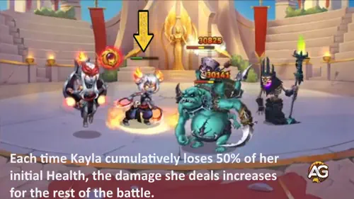
Evolution Priority: HIGH (green) – A powerful late-stage upgrade that transforms Kayla into an unstoppable damage dealer in extended battles. Prioritize after Inner Flame and its legendary version.
Relic Unlocks at Level 30 Info
| Info | Value |
|---|---|
| Relic Shard Necessary (Level 21–30) |
1750
|
| Total Relic Shard Necessary (Level 0–30) |
2880
|
| Total Physical Attack Bonus (Level 0–30) |
+38352
|
| Total Health Bonus (Level 0–30) |
+293704
|
Kayla Relic Skill Priority Summary
- Phoenix's Fury (VERY HIGH) – Health steal + Aidan resurrection
- Inner Flame + Legendary (VERY HIGH) – Core pure area damage
- Acrobatics + Legendary (HIGH) – Survival + positioning + synergy
- Frenzy (HIGH) – Stacking damage multiplier for extended fights
- Retaliatory Strike (MEDIUM-HIGH) – Retaliation damage + blinding
- Chaotic Fracture (MEDIUM) – Team armor reduction utility
Note: Focus on upgrading Kayla's core damage and survivability skills first. Phoenix's Fury and Inner Flame are your top priorities, followed by Acrobatics for positioning and healing. Frenzy is a powerful late-game upgrade that enhances her damage output in prolonged battles.
Remember: Kayla thrives in long battles where her healing, stacking damage, and pure area effects can compound. Build teams around health-increasing heroes like Aidan, and Byrna to maximize her potential. The higher her health pool, the more damage Inner Flame deals, and the more powerful she becomes as the battle extends.
Kayla Talisman Guide - Hero Wars Alliance
Master Kayla's talisman selection to maximize her legendary relic abilities in battle. Unlike skins that provide permanent bonuses, talismans only grant their bonuses when equipped, making talisman choice critical for battle strategy. Kayla has access to two distinct talismans, and selecting the right one can dramatically amplify her damage output or defensive capabilities depending on your team composition and battle requirements.
Talisman of Memory
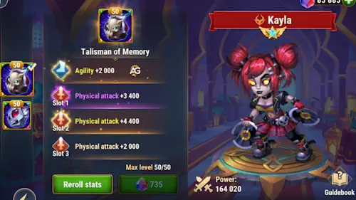
The Talisman of Memory is a powerful offensive choice that dramatically enhances Kayla's physical attack output. This talisman provides substantial Agility as its main stat, which synergizes perfectly with Kayla's primary stat scaling. Since each Agility point grants two Physical Attack points plus bonus Physical Attack from her main stat, this talisman creates a multiplicative damage boost across all her physical abilities.
Stat Distribution:
- Main Stat Slot: Agility +2000
- Each Agility point grants: 2 points to Physical Attack + 1 point to Armor + 1 extra Physical Attack (main stat bonus)
- Total Main Stat Conversion: Physical Attack +6000 | Armor +2000
- Reroll Slots (Total Combined): Physical Attack +6000
| Talisman | Main Stat Bonus |
|---|---|
|
Talisman of Memory |
Agility +2000 |
| Slot 1 | Slot 2 | Slot 3 | Total Reroll Bonus |
|---|---|---|---|
|
Physical Attack +2000 |
Physical Attack +2000 |
Physical Attack +2000 |
Physical Attack +6000 |
Total Bonus Summary: Physical Attack +12000 | Armor +2000
Strategic Analysis: The Talisman of Memory excels at maximizing Kayla's raw damage output. The combined +12000 Physical Attack bonus directly scales with Phoenix's Fury (health steal), Retaliatory Strike (counterattack damage), and enhances the armor penetration scaling from her relic abilities. This talisman is ideal for pure damage compositions where maximizing area damage output is the primary goal.
Best Against: High-health compositions where Phoenix's Fury's damage scaling is critical, or when facing teams that rely on positioning rather than heavy armor.
Recommendation Priority: VERY HIGH (dark green) – Choose this talisman when you want to maximize Kayla's pure area damage output and healing sustain.
Talisman of Retribution
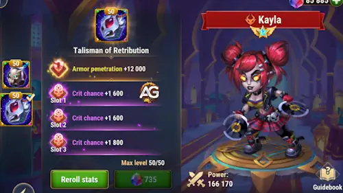
The Talisman of Retribution transforms Kayla into a critical damage specialist. This talisman provides massive Armor Penetration as its main stat, breaking through enemy defenses, while the reroll slots focus entirely on Critical Hit Chance. This combination makes Kayla a critical damage powerhouse, capable of devastating bursts that ignore enemy armor. Additionally, this talisman creates powerful synergies with critical damage amplifiers like Jet and Guus.
Stat Distribution:
- Main Stat Slot: Armor Penetration +12000
- Reroll Slots (Total Combined): Critical Hit Chance +6600
| Talisman | Main Stat Bonus |
|---|---|
|
Talisman of Retribution |
Armor Penetration +12000 |
| Slot 1 | Slot 2 | Slot 3 | Total Reroll Bonus |
|---|---|---|---|
|
Critical Hit Chance +2200 |
Critical Hit Chance +2200 |
Critical Hit Chance +2200 |
Critical Hit Chance +6600 |
Total Bonus Summary: Armor Penetration +12000 | Critical Hit Chance +6600
Strategic Analysis: The Talisman of Retribution excels against high-armor compositions by providing massive defense penetration. The added Critical Hit Chance transforms Kayla into a critical damage dealer, creating synergy with team members who amplify critical damage. While Kayla's primary role is pure area damage, this talisman allows her to specialize in critical-based offense, making her devastating in burst scenarios and against heavily armored opponents.
Best Against: High-armor tank compositions, teams with critical damage amplifiers (Jet, Guus), or when you need burst damage to eliminate key targets quickly.
Recommendation Priority: HIGH (green) – Choose this talisman when facing armor-heavy compositions or when your team composition includes critical damage amplifiers.
Kayla Talisman Selection Summary
Remember: Talisman bonuses are only active when that specific talisman is equipped, unlike skins which provide permanent passive bonuses. Choose your equipped talisman based on battle matchups and team composition:
- Talisman of Memory (VERY HIGH) – Maximize pure area damage output with +12000 Physical Attack bonus. Best for damage-focused compositions.
- Talisman of Retribution (HIGH) – Overcome armor defenses with +12000 Armor Penetration and create critical damage synergies. Best against tanks and with critical amplifiers.
Talisman Selection Tips:
- Use Talisman of Memory when: Building pure damage compositions, facing teams without heavy armor, or when you want maximum healing from Phoenix's Fury.
- Use Talisman of Retribution when: Facing high-armor tank compositions, building critical damage synergies with Jet or Guus, or when you need burst damage capability.
- Critical Difference: Talismans are not permanent like skins – you must select which talisman to equip before battle. This makes talisman selection a crucial strategic decision that directly impacts your battle effectiveness.
Best Skin for Kayla Hero Wars Alliance
Discover which Kayla skins provide the greatest advantages in battle. Our detailed priority analysis reveals how each skin enhances her legendary relic abilities, helping you choose the perfect appearance for maximum combat effectiveness and strategic advantage.
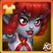
Solar Skin+
Stats: Physical Attack +28380
The Solar Skin amplifies Kayla's primary damage output through exceptional Physical Attack bonuses. This skin transforms her into a pure damage powerhouse, enhancing all her physical abilities, particularly Phoenix's Fury and Retaliatory Strike. The massive Physical Attack increase directly scales with her relic skills that depend on attack power.
Evolution Priority: VERY HIGH (dark green) – Prioritize this skin for maximum damage output in both PvP and Frontier battles.
Stats: Armor Penetration +10650
The Cybernetic Skin specializes in breaking through enemy defenses by significantly increasing Armor Penetration. This allows your Physical Attack damage to bypass more enemy armor, making your damage more effective against heavily armored opponents. This skin becomes increasingly valuable when facing tank-heavy compositions or enemies with high armor builds.
Evolution Priority: HIGH (green) – Excellent choice for competitive battles where armor reduction determines victory.
Default Skin
Stats: Agility +1365
Kayla's iconic default appearance provides solid Agility bonuses. Each Agility point grants two Physical Attack points plus one Armor point, with an additional Physical Attack bonus since Agility is her main stat. While modest compared to specialized skins, this baseline skin offers well-rounded improvements to both offense and defense.
Evolution Priority: MEDIUM-HIGH (orange) – Reliable choice for balanced gameplay with moderate damage and survivability improvements.
Stats: Crushing +5920
The Masquerade Skin increases Crushing stat, which enhances your ability to overcome enemy defenses through raw impact damage. While not as direct as Armor Penetration, Crushing provides another method to ensure your attacks hit harder regardless of enemy armor values. This skin supports a more aggressive frontline playstyle.
Evolution Priority: MEDIUM (yellow) – Situational choice for specific team compositions focused on overwhelming enemy defenses.
Stats: Armor +10560
The Celestial Skin prioritizes survivability by increasing Armor, providing additional defense against incoming Physical Attack damage. While defensive in nature, this skin extends your survival time on the frontlines, allowing you to maintain your healing loops with Phoenix's Fury and deal sustained damage through Inner Flame over longer battles.
Evolution Priority: MEDIUM (yellow) – Choose this skin when facing heavy physical damage compositions or when your team needs extended frontline presence.
Blazing Skin
Stats: Health +106645
The Blazing Skin is a powerful offensive-support choice that directly scales Kayla's most important damage mechanics. Since Inner Flame's pure damage per tick depends on her Health pool, this massive Health increase boosts every single tick of that ability. It also increases Acrobatics healing output and raises the Frenzy trigger threshold, keeping stacks building in longer battles.
Evolution Priority: HIGH (green) – Excellent choice for pure damage builds. The Health bonus directly increases Inner Flame's damage, Acrobatics' healing, and the Frenzy stacking cycle — amplifying all of Kayla's core mechanics at once.
Kayla Skin Priority Summary
- Solar Skin+ (VERY HIGH) – Physical Attack +28380 for maximum damage
- Cybernetic Skin (HIGH) – Armor Penetration +10650 to break through defenses
- Blazing Skin (HIGH) – Health +106645 to scale Inner Flame, Acrobatics healing and Frenzy
- Default Skin (MEDIUM-HIGH) – Agility +1365 for balanced growth
- Masquerade Skin (MEDIUM) – Crushing +5920 for defense penetration
- Celestial Skin (MEDIUM) – Armor +10560 for survivability
Tip: Solar Skin+ is always your best choice for maximizing Kayla's damage potential. Blazing Skin is a strong second option if you want to amplify Inner Flame's pure damage scaling. If you face high-armor opponents, switch to Cybernetic Skin to ensure your attacks penetrate their defenses effectively.
Kayla Artifact Evolution Priority - Hero Wars Alliance
Discover the optimal artifact progression path for Kayla to maximize her legendary relic abilities. Each artifact provides distinct advantages that enhance her damage output and survivability, making strategic artifact selection crucial for dominating both PvP and Frontier battles.

1st - Ring Artifact
The Ring is Kayla's most essential artifact, providing a combination of Physical Attack and Armor that directly amplifies her core strengths. This artifact enhances both her offensive and defensive capabilities simultaneously, making it the foundation of her artifact strategy. The balanced stat distribution allows Kayla to deal maximum damage while maintaining adequate survivability on the frontlines.
Key Benefits: Physical Attack + Armor boost for balanced offense and defense
Evolution Priority: VERY HIGH (dark green) – Prioritize this first. The Ring provides the most significant overall stat boost and is essential for maximizing both Kayla's damage output and durability in any battle scenario.

2nd - Book Artifact
The Book is Kayla's secondary artifact choice, providing substantial boosts that complement her main stat priorities. This artifact strengthens her offensive capabilities and synergizes well with her legendary relic skills, particularly those that scale with Physical Attack. While powerful, it focuses primarily on offense compared to the Ring's balanced approach.
Key Benefits: Enhanced Physical Attack and scaling for damage abilities
Evolution Priority: HIGH (green) – Upgrade this as your second artifact. The Book significantly increases your damage output and works well with Kayla's pure damage mechanics, making it essential for aggressive team compositions.
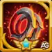
3rd - Weapon Artifact: Phoenix Chakram
The Phoenix Chakram is Kayla's weapon artifact, providing a focused boost to Physical Attack (+21357) with a special activation mechanic. This artifact triggers 100% of the time when Kayla uses her supreme ability, granting team-wide bonus stats for 9 seconds. While powerful for team synergy and burst damage moments, its effectiveness depends on proper skill timing and team composition.
Key Benefits: Physical Attack +21357 + Team buff on supreme ability activation
Activation Chance: 100% | Buff Duration: 9 seconds
Evolution Priority: MEDIUM-HIGH (orange) – Upgrade this third. While the Phoenix Chakram provides solid Physical Attack and valuable team synergy, its conditional activation makes it less reliable than the Ring or Book for consistent damage output.
Kayla Artifact Priority Summary
- Ring (VERY HIGH) – Balanced Physical Attack + Armor for offense and defense
- Book (HIGH) – Enhanced Physical Attack for maximum damage scaling
- Phoenix Chakram Weapon (MEDIUM-HIGH) – Physical Attack + team buff on supreme ability
Tip: Always prioritize the Ring first for its balanced stat distribution. Then invest in the Book to amplify Kayla's damage output. Finally, upgrade the Phoenix Chakram weapon to unlock its team synergy potential when you use her supreme ability in critical moments.
Kayla Glyph Evolution Priority - Hero Wars Alliance
Master Kayla's glyph progression to unlock her full potential in battle. Each glyph type provides distinct advantages that synergize with her legendary relic abilities, making strategic glyph selection essential for maximizing both offensive power and survivability on the frontlines.
1st - Physical Attack Glyph
Physical Attack is Kayla's primary offensive stat, directly powering her most critical abilities. Her signature skills Phoenix's Fury and Retaliatory Strike both scale significantly with Physical Attack, making this glyph foundational to her damage output. Every point invested here multiplies the effectiveness of her devastating relic combos.
Level 80 Stats: +8340
Key Benefits: Powers Phoenix's Fury, Retaliatory Strike, and Chaotic Fracture damage scaling
Evolution Priority: VERY HIGH (dark green) – Prioritize this first. Physical Attack is the foundation of Kayla's damage identity and directly enhances her most powerful abilities, making it essential for any battle scenario.
2nd - Armor Glyph
Armor provides crucial defensive reinforcement for Kayla's frontline position. This glyph significantly increases her resistance to Physical Attack damage, allowing her to maintain longer presence on the battlefield. Better survivability means more time to unleash her devastating damage combos and maintain healing loops with Phoenix's Fury.
Level 80 Stats: +12850
Key Benefits: Reduces incoming Physical Attack damage, extends frontline durability
Evolution Priority: HIGH (green) – Upgrade this second. Armor ensures Kayla survives long enough to deal maximum damage. Strong synergy with her health-scaling abilities makes it critical for extended battles.
3rd - Magic Defense Glyph
Magic Defense protects against magical damage but is less critical for Kayla's ability kit. While several of her counters deal magic damage (Morrigan, Keira, Iris), her legendary relic abilities do not directly scale with Magic Defense. This glyph is valuable for specific matchups but not essential for her core strategy.
Level 80 Stats: +12850
Key Benefits: Reduces incoming Magic damage, helpful against mage-heavy teams
Evolution Priority: MEDIUM (yellow) – Upgrade this third. While Magic Defense is valuable against certain opponents, it doesn't directly enhance Kayla's abilities. Prioritize this only after maximizing Physical Attack and Health.
4th - Health Glyph
Health is absolutely critical for Kayla's legendary relic synergy. Her Inner Flame ability scales directly with Health pool, dealing more pure damage per second for larger health totals. Additionally, her Acrobatics healing and Frenzy damage multiplier both benefit from increased maximum health. This is a cornerstone glyph for her pure damage identity.
Level 80 Stats: +122800
Key Benefits: Increases Inner Flame damage scaling, enhances Acrobatics healing, improves Frenzy multiplier stacking
Evolution Priority: VERY HIGH (dark green) – Prioritize this alongside Physical Attack. Health directly empowers Kayla's most devastating abilities and synergizes perfectly with her healing mechanics, making it essential for maximum damage output.
5th - Agility Glyph
Agility is Kayla's primary stat, providing exceptional multi-faceted benefits. Each Agility point grants two Physical Attack points plus one Armor point, with an additional Physical Attack bonus since Agility is her main stat. This creates tremendous value—a single Agility investment amplifies both offense and defense simultaneously, making it incredibly efficient.
Level 80 Stats: +2110 Agility
Per Agility Point Grants: +2 Physical Attack, +1 Armor, +1 Extra Physical Attack (main stat bonus)
Key Benefits: Multi-stat boost providing Physical Attack, Armor, and main stat synergy
Evolution Priority: HIGH (green) – Upgrade this alongside your other priorities. Agility's multi-benefit nature makes it incredibly valuable, providing balanced growth in both offense and defense while being her main stat.
Kayla Glyph Priority Summary
- Physical Attack (VERY HIGH) – +8340 | Powers core damage abilities
- Health (VERY HIGH) – +122800 | Scales Inner Flame and healing
- Agility (HIGH) – +2110 | Multi-stat boost for main stat synergy
- Armor (HIGH) – +12850 | Essential frontline defense
- Magic Defense (MEDIUM) – +12850 | Situational against magic damage
Strategy Tip: Focus on maxing Physical Attack and Health first—these are the cornerstones of Kayla's damage and survivability. Then invest in Agility for its efficient multi-stat benefits. Finally, balance Armor with situational Magic Defense upgrades based on your current matchups and opponents you face.
Best Teams for Kayla in 2026 - Hero Wars: Alliance
| Kayla - Best Team 2026 #1 | |||||
|---|---|---|---|---|---|
|
|
|
|
|
|
|
|
|
|
|
|
|
|
Team 1# Analysis:
This composition revolves around a triple synergy: Kendle's Legendary Relic Level 20 gives allies dealing pure damage a chance to deal critical pure damage — enabling Kayla's Inner Flame and Chaotic Fracture to crit. Cleaver's hook clusters enemies inside Kayla's AoE range, multiplying every critical pure damage tick. Aidan's health amplification scales Inner Flame's damage directly while keeping Kayla alive longer. Xe'sha strips armor and magic penetration from enemies, and Kendle doubles as crowd control and secondary damage dealer.
| Kayla - Best Team 2026 #2 | |||||
|---|---|---|---|---|---|
|
|
|
|
|
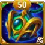 Talisman 2 |
|
|
|
|
|
|
|
|
Team #2 Analysis:
This composition combines two of the strongest current pressure mechanics in the meta: Kayla's scaling pure damage and Iris's new DOT-based damage pattern. Kendle is the key bridge between them, because beyond her relic synergy she also increases magic critical chance for allies even through her base skills, making Iris far more lethal while her damage-over-time effects keep ticking. At the same time, Kendle's Legendary Relic Level 20 lets Kayla's pure damage gain access to critical pure damage, while Aidan boosts Kayla's health to scale Inner Flame and keep her alive longer. Electra adds frontline pressure and control, giving Iris and Kayla more time to overwhelm enemy teams as the fight extends.
Most Used Teams for Kayla
- Electra, Kayla, Guus, Somna, Aidan
- Julius, Kayla, Guus, Somna, Aidan
- Julius, Kayla, Xe'sha, Lian, Aidan
- Electra, Kayla, Guus, Folio, Aidan
- Julius, Kayla, Guus, Folio, Aidan
- Julius, Kayla, Byrna, Peech, Aidan
- Julius, Kayla, Dante, Aidan, Octavia
Note: These teams are based on current player data and may evolve as new heroes, skins, and relics are introduced. Always consider your available roster and the specific battle context when selecting your team composition.
Kayla Legendary Relic Guide Conclusion
In summary, Kayla's legendary relic abilities in Hero Wars Alliance are significantly enhanced by strategic choices in talismans, skins, artifacts, and glyphs. Prioritizing the Talisman of Memory maximizes her raw damage output, while the Solar Skin+ further amplifies her offensive capabilities. The Ring and Book artifacts provide essential stat boosts that balance offense and defense, and focusing on Physical Attack and Health glyphs unlocks her full potential.
By following this comprehensive guide, players can optimize Kayla's performance in both
Video suggestion
Explore new skills with our featured guides!


Leave Your Opinion!
Did you like our Kayla Legendary Relic Guide for Hero Wars Mobile? Is there something you didn't understand or would like to suggest changes to? We invite you to join our comment section on the Alexandre Games Blog page. Feel free to express your opinion, clarify your doubts, and share your suggestions.
Click the button below to get started: